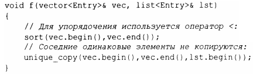
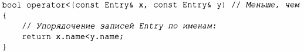
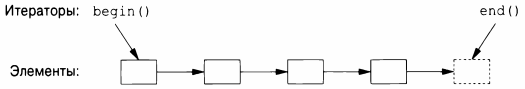
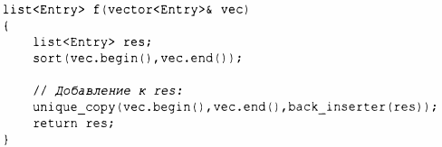

⇐ГЛАВА 11. КОНТЕЙНЕРЫ. 11.7 Советы 12.2 Применение итераторов⇒
Структура данных, такая как список или вектор, сама по себе не слишком полезна. Чтобы ее использовать, нужны основные операции доступа, такие как добавление и удаление элементов (предусмотренные, например, для list и vector). Кроме того, мы редко просто храним объекты в контейнере. Мы сортируем их, выводим, извлекаем подмножества элементов, удаляем, ищем объекты и т.д. Поэтому стандартная библиотека в дополнение к наиболее распространенным типам контейнеров предоставляет и наиболее распространенные алгоритмы для работы с ними. Например, мы можем просто и эффективно отсортировать вектор элементов En t ry и поместить копию каждого уникального элемента вектора в список:
Чтобы этот код работал, для типа Entry должны быть определены операторы меньше (<) и равно ( == ). Например:
Стандартный алгоритм выражается через (полуоткрытые) последовательности элементов. Последовательность представлена парой итераторов, определяющих первый элемент и следующий за последним элементом:
В этом примере функция sort () сортирует последовательность, определенную парой итераторов vec.begin () и vec.end (),которая просто содержит все элементы вектора. Для записи (вывода) нужно указать только первый записываемый элемент. Если записывается более одного элемента, то элементы, следующие за этим начальным, будут перезаписаны. Таким образом, чтобы избежать ошибок, lst должен иметь как минимум столько элементов, сколько уникальных значений в vec.
Если бы мы хотели разместить уникальные элементы в новом контейнере, то могли бы написать
Вызов back_ inserter ( res) создает итератор для res, который добавляет элементы в конец контейнера, расширяя последний так, чтобы для них нашлось место. Это избавляет нас от необходимости сначала выделять фиксированное количество памяти, а затем заполнять его. Таким образом, стандартные контейнеры совместно с back_inserter() исключают необходимость использования явного управления памятью в стиле С с использованием функции realloc (). У списка list стандартной библиотеки имеется конструктор перемещения (§5.2.2), который делает возврат res по значению эффективным (даже для списков из тысяч элементов).
Если вы найдете стиль кода с использованием пары итераторов, такой как sort (vec.begin (), vec.end () ) , утомительным, можете определить версии алгоритмов для контейнеров и писать просто sort ( vec) (§ 12.8).